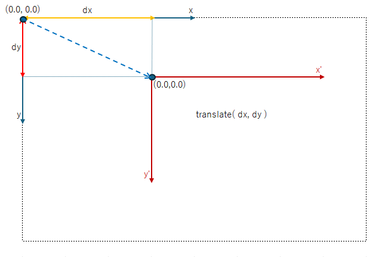

(update:2025/3/22)

座標系を平行移動します。
cairoでは、二次元座標が採用されており、x軸は、右方向が正、y軸は下向きの方向が正となっています。原点(0.0, 0.0)は、Windowの左上の角となっています。
座標系を平行移動する際は、translate()関数を実行します。x軸方向の移動量dx(pixel)、y軸方向の移動量dy(pixel)をtranslate()関数にセットして、translate()関数を実行します。translate()関数が実行された後に形成されるパスは、座標系が変更されて描かれます。
| void Cairo::Context::translate( | double | dx, | // x座標の移動量(pixel) |
|---|---|---|---|
| double | dy ) | // x座標の移動量(pixel) |
#include <gtkmm.h>
class Drawing : public Gtk::DrawingArea {
public:
Drawing();
virtual ~Drawing() = default;
protected:
void on_draw(const Cairo::RefPtr<Cairo::Context>& cr, int width, int height);
};
Drawing::Drawing()
{
set_draw_func( sigc::mem_fun( *this, &Drawing::on_draw));
}
void Drawing::on_draw(const Cairo::RefPtr<Cairo::Context>& cr, int width, int height) {
// figure1
cr->rectangle( 50.0, 30.0, 30.0, 30.0 );
cr->translate( 100.0, 50.0 );
// figure2
cr->rectangle( 50.0, 30.0, 30.0, 30.0 );
cr->translate( 100.0, 50.0 );
// figure3
cr->rectangle( 50.0, 30.0, 30.0, 30.0 );
cr->set_line_width( 3.0 );
cr->set_source_rgb( 0.0, 0.05, 0.95 );
cr->fill_preserve();
cr->set_source_rgb( 0.0, 0.0, 0.0 );
cr->stroke();
}
class MyWindow : public Gtk::Window
{
public:
MyWindow();
protected:
Drawing my_draw;
};
MyWindow::MyWindow()
{
set_title( "translate" );
set_default_size( 320, 240 );
set_child( my_draw );
}
int main(int argc, char* argv[]) {
auto app = Gtk::Application::create( "gtkmm4.example" );
return app->make_window_and_run<MyWindow>( argc, argv );
}